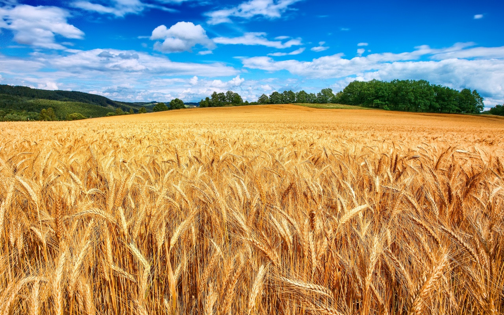

🌾 Wheat Crop Details 🌾
⬅ Back to Farm Map

|
Crop Information
|
| 🌾 Crop Name |
Wheat |
| 🌿 Variety |
HD 2967 |
| 📅 Sowing Date |
10 November 2025 |
| ⏳ Harvest Time |
5–6 Months |
| 🟤 Soil Type |
Loamy Soil |
| 💧 Water Requirement |
Medium |
| 🧪 Fertilizer |
Urea and DAP |
| ✅ Crop Status |
Healthy |
|
📖 Additional Information
|
|
Wheat requires timely irrigation and proper
nutrient management. Regular monitoring of
soil moisture and balanced fertilizer
application helps improve crop growth and
increase production.
|
Smart Agriculture Project
|